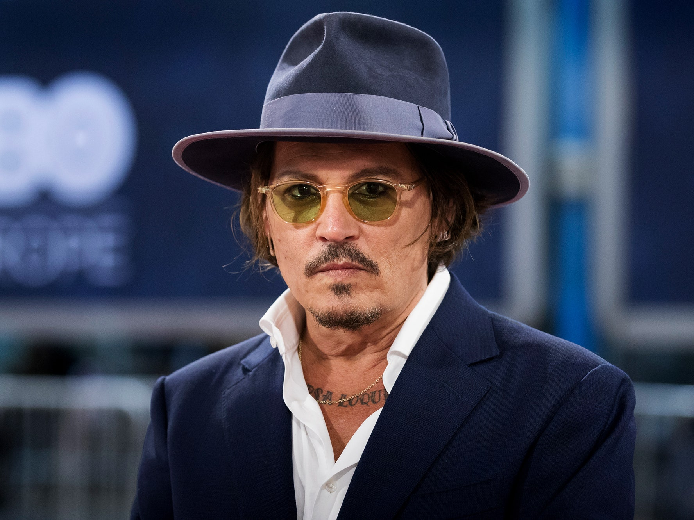
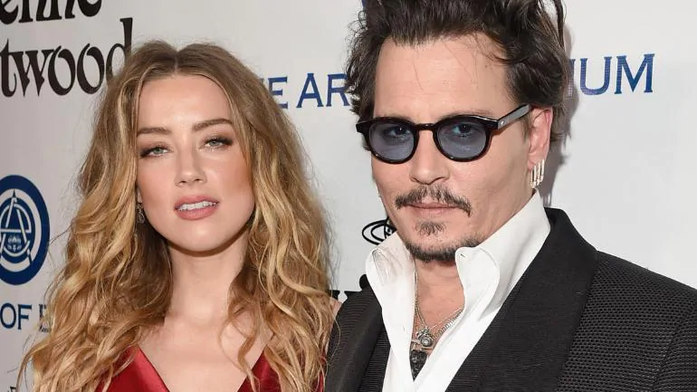
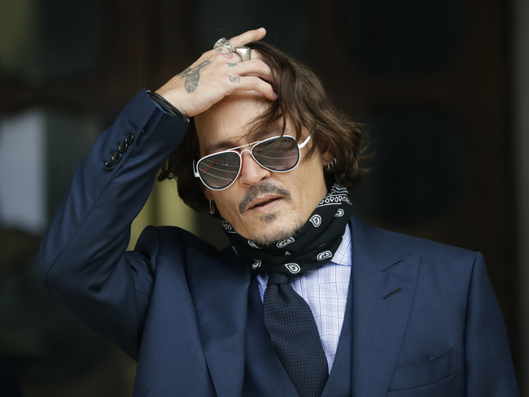
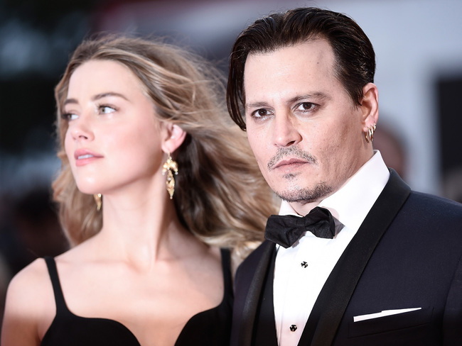
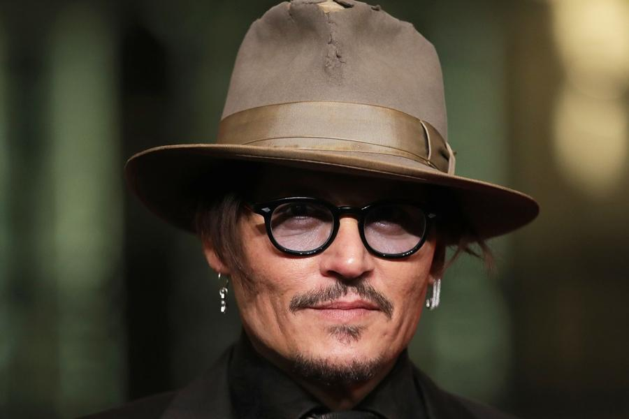
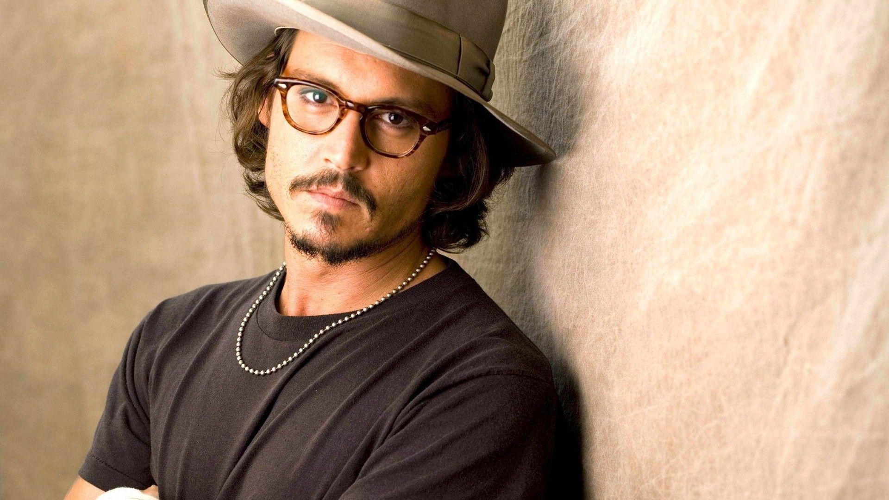
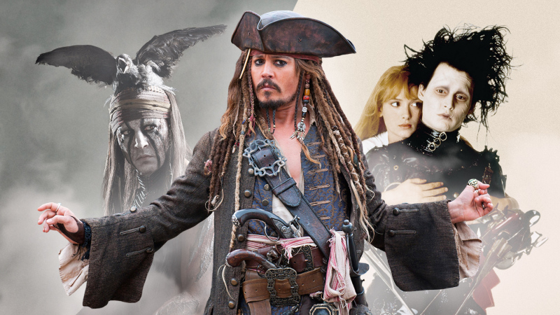

Johnny Depp
John Christopher Depp II (born June 9, 1963) is an American actor, producer, and musician. He has been nominated for ten Golden Globe Awards, winning one for Best Actor for Sweeney Todd: The Demon Barber of Fleet Street (2007), and has been nominated
for three Academy Awards for Best Actor, among other accolades. Depp made his debut in the horror film A Nightmare on Elm Street (1984), before rising to prominence as a teen idol on the television series 21 Jump Street (1987–1990).
In the 1990s, Depp acted mostly in independent films, often playing eccentric characters. These included What's Eating Gilbert Grape (1993), Benny and Joon (1993), Dead Man (1995), Donnie Brasco (1997) and Fear and Loathing in Las
Vegas (1998). Depp also began collaborating with director Tim Burton, starring in Edward Scissorhands (1990), Ed Wood (1994) and Sleepy Hollow (1999). In the 2000s, Depp became one of the most commercially successful film stars by
playing Jack Sparrow in the swashbuckler film series Pirates of the Caribbean (2003–present). He received critical praise for Finding Neverland (2004), and continued his commercially successful collaboration with Tim Burton with the
films Charlie and the Chocolate Factory (2005), Corpse Bride (2005), Sweeney Todd (2007), and Alice in Wonderland (2010). In 2012, Depp was one of the world's biggest film stars,[1][2] and was listed by the Guinness World Records as
the world's highest-paid actor, with earnings of US$75 million.[3] During the 2010s, Depp began producing films through his company, Infinitum Nihil, and formed the rock supergroup Hollywood Vampires with Alice Cooper and Joe Perry.







